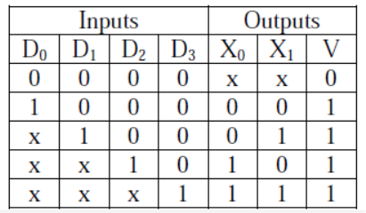
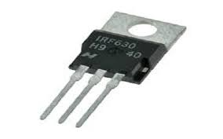
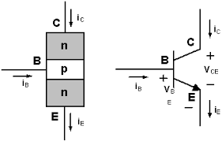

Assignment 1
Digital Logic & Number representation
Due Date:10 JULY 2021
In the following truth table, V = 1 if and only if the input is valid. What function does the truth table represent?Assignment 2
MOSFET
Due Date: 12 JULY 2021
Channel current is reduced on application of a more positive voltage to the gate of a depletion mode n-channel MOSFET
Assignment 3
BJT
Due Date: 15 JULY 2021
For a BJT the common base current gain $$\alpha$$ = 0.98 and the collector base junction reverse bias saturation current...
Computer Programming

Dr. Parnika Paranjape
Database

Dr. Nikhil